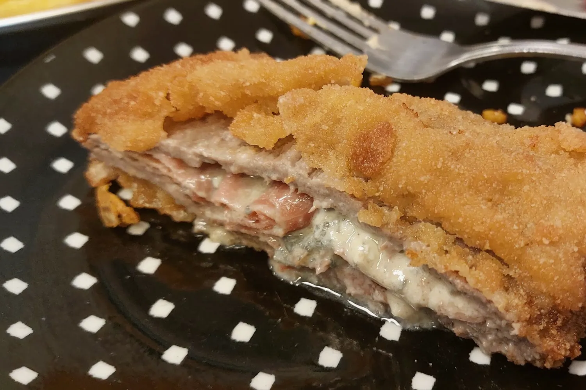
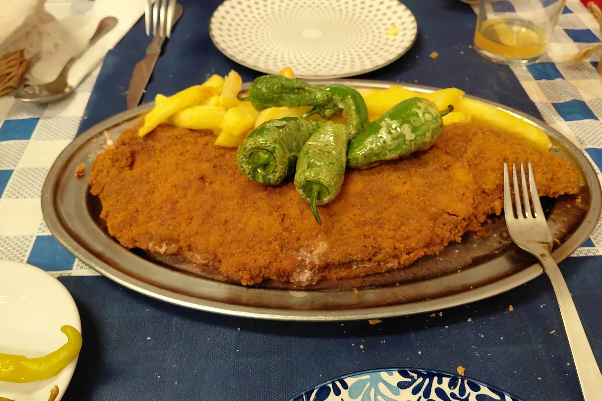
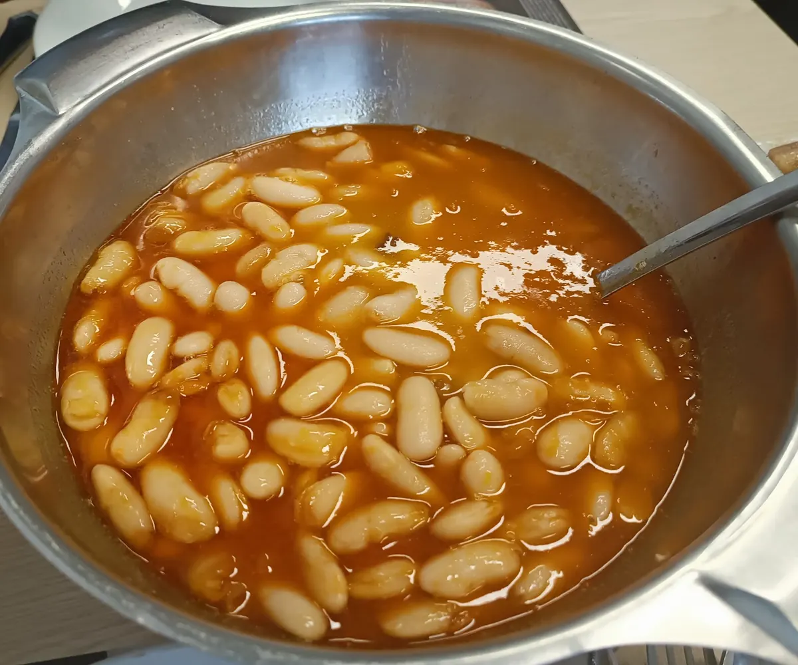
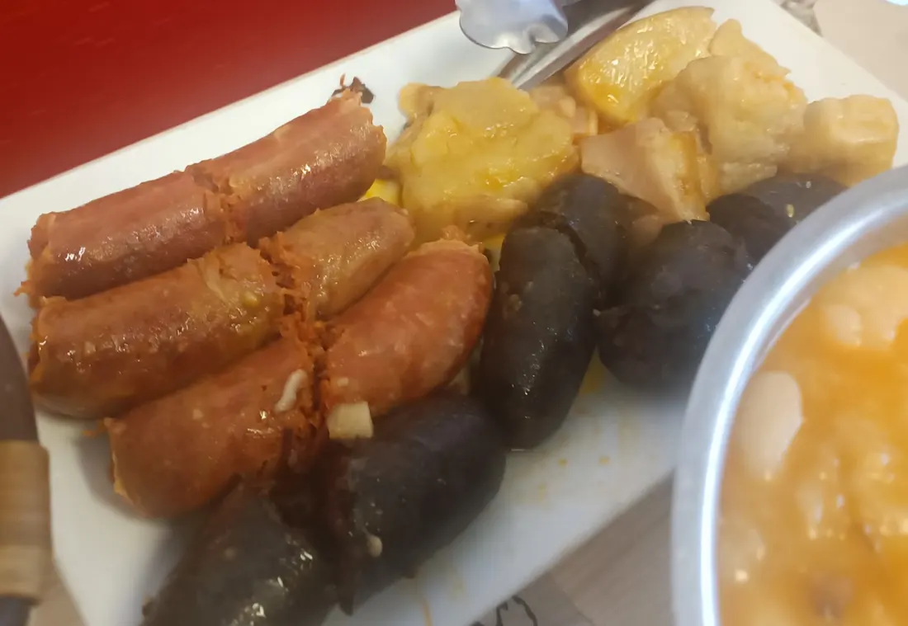
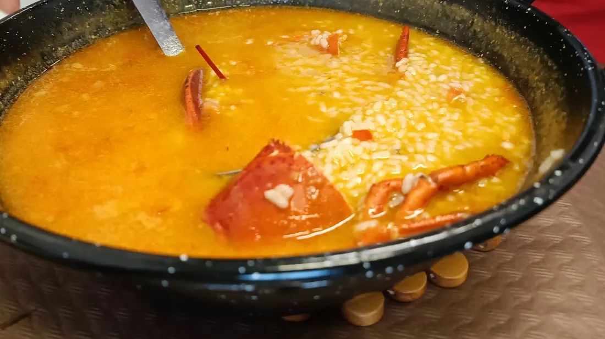
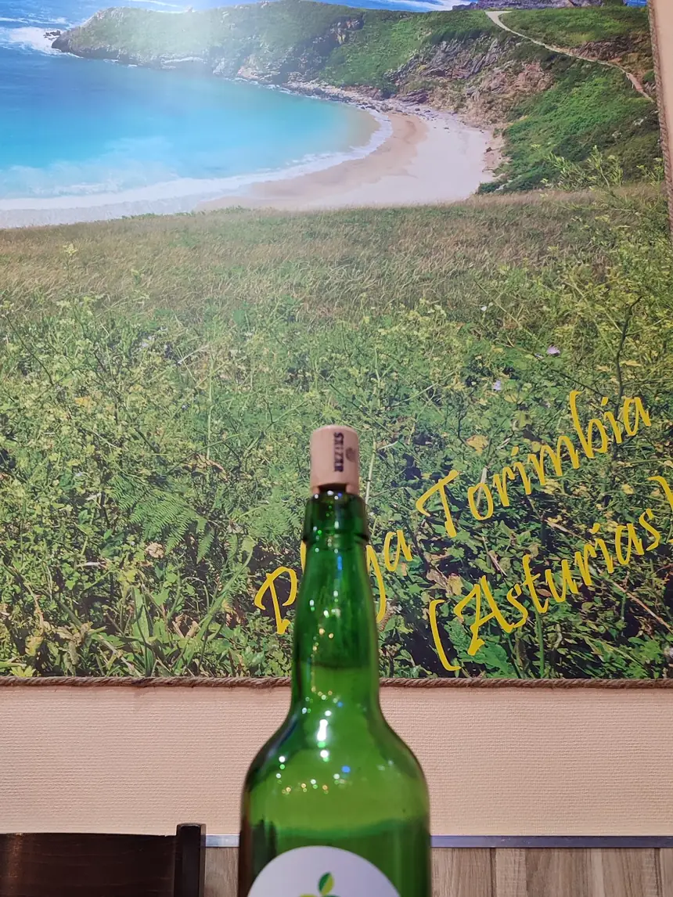
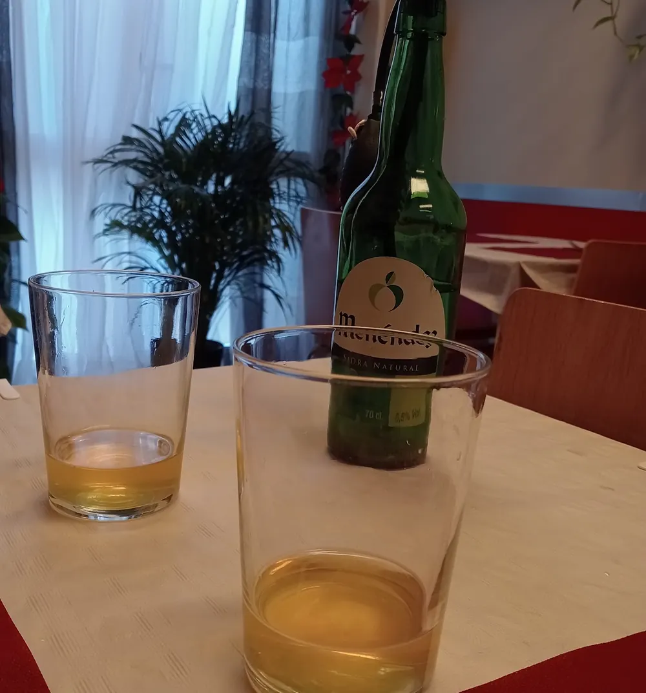
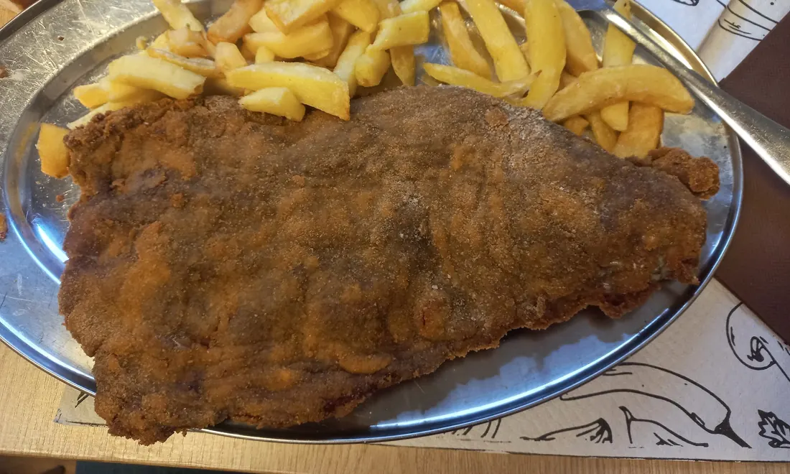
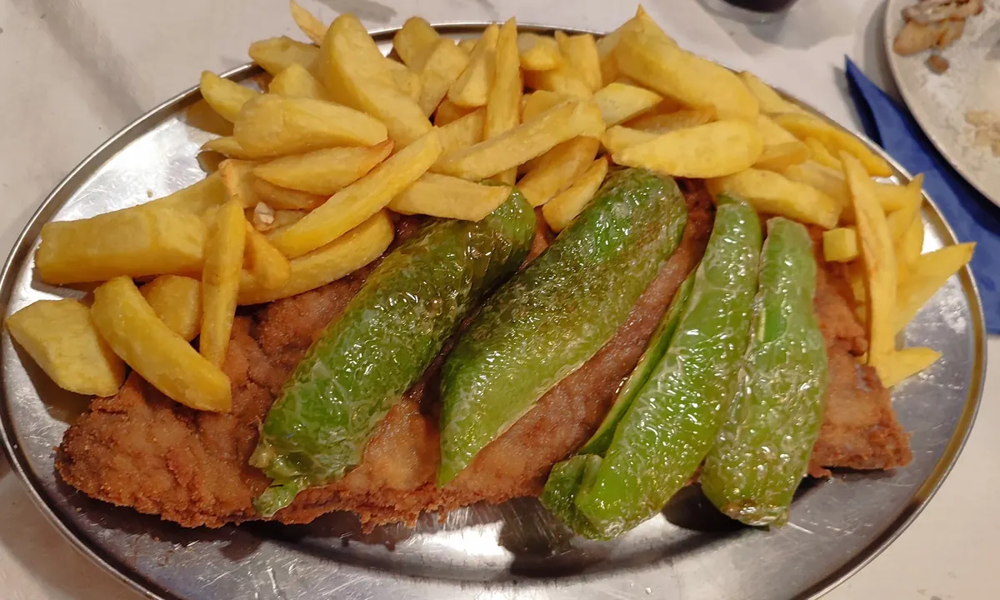
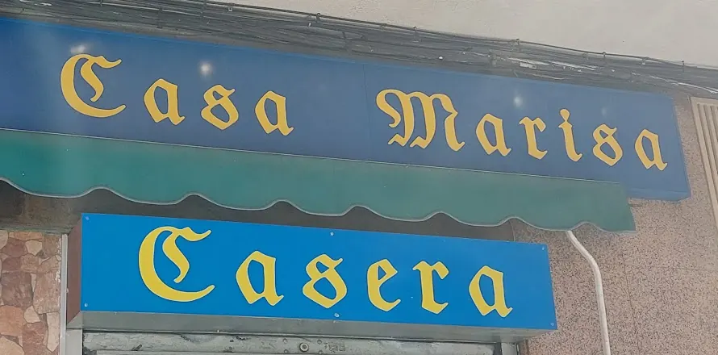

Casa Marisa · Carabanchel
Comida casera asturiana. Y un cachopo que da para dos.
Casa de comidas de barrio en la calle Alzina, 11, en Carabanchel. Desayunos, menú del día, raciones y, por encargo, fabada, fabes con almejas y arroz con bogavante.
4,5 · 820 reseñas en Google
Reservas · 917 64 73 66


Un cachopo con pimientos y patatas, en su fuente, sobre el mantel de cuadros.
Por dentro, jamón y queso. En la carta hay cinco rellenos: ver los cachopos.
Fotos de clientes en Google Maps (mayo y junio de 2026).
- Fabada
- Cachopo
- Arroz con bogavante
- Patatas al cabrales
- Sidra natural
- Menú del día
- Comida casera
Nuestra carta
Cachopos, raciones, bocadillos y lo que se prepara por encargo.
Pide la carta al reservar: 917 64 73 66.
Nuestras especialidades
Por encargo
Arroz con bogavantepor persona20,00 €
Paellapor persona12,00 €
Fabada asturianapor persona13,00 €
Fabes con almejaspor persona15,00 €
Rabo de toropor persona14,00 €
Pollo asado con patatas12,00 €
Conejo al ajillo14,00 €
Cordero al ajillo (por cuartos)Consultar
Chuletas de corderoConsultar
Chuletón de ÁvilaConsultar
Nuestros cachopos
23,00 € cada uno
Cachopo Nº1
Con cecina, jamón, queso, huevo duro, beicon
Cachopo Nº2
Con jamón serrano y queso cabrales
Cachopo Nº3
Con picadillo asturiano y queso cabrales
Cachopo Nº4
Con queso de cabra y membrillo
Cachopo Nº5
Con carne picada, pimientos y queso
Nuestras raciones
Alitas de pollo9,00 €
Calamares a la andaluza10,50 €
Callos caseros9,50 €
Chorizo a la sidra10,00 €
Chorizo ibérico11,50 €
Croquetas caseras10,50 €
Fingers caseros8,50 €
Huevos rotos con jamón10,50 €
Huevos rotos con secreto y morcilla14,50 €
Jamón ibérico14,00 €
Lacón a la gallega9,50 €
Oreja a la plancha10,00 €
Patatas al cabrales/
alioli/ 9,00 €bravas/ mixtas Pulpo a la gallega18,50 €
Queso cabrales/
curado de oveja 13,50 €
Nuestros sándwiches
Incluyen patatas fritas
Sándwich mixto4,50 €
Sándwich mixto con huevo5,00 €
Sándwich vegetal6,00 €
Lechuga, tomate, espárragos, atún, huevo duro y mahonesa
* Precios de la carta de diciembre de 2023, pendientes de confirmar. Los demás, de 2026. IVA incluido.
Si tienes alguna alergia o intolerancia, pregunta antes de pedir.
Nuestros bocadillos
Beicon4,50 €
Calamares con alioli4,50 €
Cinta de lomo4,50 €
Chorizo ibérico4,50 €
Chorizo frito4,50 €
De la casa6,50 €
Hamburguesa con beicon, queso y salsa brava
Jamón ibérico6,50 €
Panceta4,50 €
Sola, con queso o con pimientos
Pepito de ternera5,00 €
Pincho de tortilla3,60 €
Queso de oveja4,50 €
Salchichón4,50 €
Tortilla española4,50 €
Tortilla francesa4,00 €
Suplemento0,60 €
Nuestras hamburguesas
Incluyen patatas fritas
Con queso5,00 €
Hamburguesa, tomate, lechuga, cebolla, queso
Completa6,00 €
Hamburguesa, tomate, lechuga, cebolla, queso, jamón, beicon
De la casa7,00 €
Hamburguesa, tomate, lechuga, cebolla, queso, jamón, beicon, huevo
Infantil4,00 €
Hamburguesa, queso
* Precios de la carta de diciembre de 2023, pendientes de confirmar. Los demás, de 2026. IVA incluido.
Si tienes alguna alergia o intolerancia, pregunta antes de pedir.
Por encargo
La fabada, las fabes y el arroz, mejor avisando.
La fabada asturiana, las fabes con almejas, el arroz con bogavante, la paella, el rabo de toro o el chuletón de Ávila se preparan por encargo. Llama el día antes y te lo tenemos listo.
Precios en nuestras especialidades.



La casa
Comida casera y fotos de Asturias en las paredes.

Casa de comidas de barrio en la esquina de Alzina con Alfredo Aleix. Desayunos por la mañana, menú a mediodía, raciones y cachopos para compartir. En el comedor, el cuadro de la playa de Torimbia.
Fotos de clientes en Google Maps.


Lo que dicen en Google
4,5 · 820 reseñas (consultado el 23-10-2026)
Lo que más sale: cachopo (120), fabada (39), arroz con bogavante (25), raciones (25), cabrales (17), sidra (11).

★★★★★
«probamos el cachopo (cabrales y jamón) de 10!»
Cliente en Google · jun. 2026 ★★★★★
«Excelente asturiano. Ojo con uno de sus platos comen dos. Rica sidra natural»
Cliente en Google · abr. 2026 ★★★★
«Bar de barrio de toda la vida,especialidad en cachopos y arroz con bogavante.»
Cliente en Google · mar. 2026 ★★★★★
«El cachopo es excelente y las patatas al cabrales son estupendas.»
Cliente en Google · dic. 2025 ★★★★★
«Las patatas cabrales increíbles»
Cliente en Google · ene. 2026 ★★★★★
«Vale la pena 100%»
Cliente en Google · jun. 2026
★★★★★
«pedimos un cachopo de jamón con cabrales para dos y tuvimos que pedir casi la mitad para llevar.»
Cliente en Google · abr. 2026 ★★★★★
«Servicio impecable, cocina espectacular y ambiente acogedor.»
Cliente en Google · abr. 2026 ★★★★
«muy bien ambientado con fotos de Asturias»
Cliente en Google · 2025 ★★★★★
«dos cachopos simplemente espectacular de 10»
Cliente en Google · 2026 ★★★★★
«La sidra fresquita, como debe de ser»
Cliente en Google · 2025
★★★★★
«A "Casa Marisa" se viene y se repite sin duda.»
Cliente en Google · abr. 2026 ★★★★★
«El cachopo de la casa espectáculo»
Cliente en Google · ene. 2026 ★★★★
«Buenas atención, buenas tapas y buen precio.»
Cliente en Google · jun. 2026 ★★★★★
«pedimos una sidra (muy buena) y un cachopo de jamón y cabrales ,que se notaba que era casero»
Cliente en Google · dic. 2025 ★★★★★
«Maravillosa la atención y la cocina.»
Cliente en Google · may. 2026
Horario
Reservas · 917 64 73 66
Horario de Google Maps. Pregunta el de cocina al 917 64 73 66, y si vienes un festivo, llama antes.
- Lunes
- 8:00 a 18:00
- Martes
- 8:00 a 21:30
- Miércoles
- 8:00 a 21:30
- Jueves
- 8:00 a 21:30
- Viernes
- 8:00 a 24:00
- Sábado
- 8:00 a 24:00
- Domingo
- 9:00 a 18:00
Dónde estamos
Busca el rótulo azul con las letras amarillas.

C. Alzina, 11
Carabanchel, 28044 Madrid
En la esquina con la calle Alfredo Aleix.
- Reservas
- Por teléfono: 917 64 73 66
- Para llevar
- Sí. A domicilio, no.
- Aparcamiento
- En la calle. Según una reseña, cuesta encontrar sitio.
- Accesibilidad
- Acceso en silla de ruedas, según Google Maps.
El mapa es de Google Maps: solo se carga si lo pides, y entonces Google puede guardar sus propias cookies.
Preguntas
¿No está aquí lo que buscas? Llama al 917 64 73 66.
¿Hay que reservar?
Es mejor, sobre todo a mediodía y los fines de semana. Las reservas se hacen por teléfono, en el 917 64 73 66.
¿Se pueden encargar la fabada o el arroz?
Sí: la fabada, las fabes con almejas, el arroz con bogavante y el resto de nuestras especialidades se preparan por encargo. Mejor llamar el día antes.
¿Hacéis comida para llevar?
Sí, te lo preparamos para llevar. A domicilio no repartimos.
¿Tenéis menú del día?
Sí, por 14 €. Los platos de cada día, por teléfono: 917 64 73 66.
¿Hay algo para niños?
En la carta está la hamburguesa infantil, con patatas fritas. Si buscas otra cosa para los peques, pregunta al reservar.
¿Y si tengo alguna alergia?
Pregunta en la casa antes de pedir y te decimos qué lleva cada plato.
Os esperamos.
Y si venís a por el cachopo, mejor reservar.
C. Alzina, 11 · Carabanchel